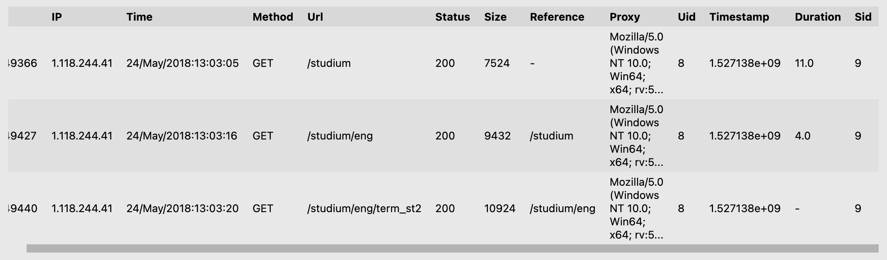
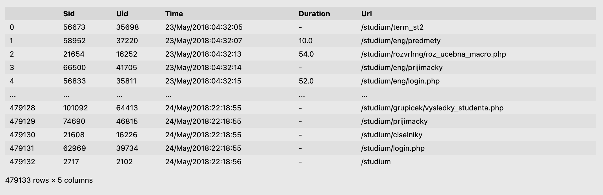

经过用户识别后，我们可以得到每个用户的访问记录，但是这些访问记录可能是不连续的。即，一个用户可能在上午对网站进行了一系列访问，然后又在下午进行了一系列访问。显然，我们并不想把上午和下午的访问记录视为一次访问会话（从访问开始到访问结束），因此我们需要识别会话。
一般的，我们将每次访问用一个二元组来表示，一个用户从开始访问服务器到结束访问服务器期间进行的连续访问页面的有限集合就叫做一次会话。
如果连续的两个请求之间的时间间隔超过25.5分钟，则不视为一次会话（可能出现了中断行为），电商行业将时间间隔设置为30分钟。在处理中，我们也将阈值设置为30分钟
根据识别标准，我们需要把两次访问间隔超时的记录视为两个会话，那么首先我们应该把我们的Time字段转为时间戳便于计算。
import pandas as pd;
import os;
import time;
logPath = os.path.join(os.getcwd(), 'log', 'new_logs_user');
logs = pd.read_pickle(logPath);
# 调整 Time 格式
logs['Time'] = logs['Time'].str.split(' ').map(lambda x: x[0]);
# 将 Time 调整为 timestamps
def handleTime(val):
return time.mktime(time.strptime(val, '%d/%B/%Y:%H:%M:%S'));
logs['Timestamp'] = logs['Time'].apply(handleTime);# 用户分组
user_groups = logs.groupby('UserID');
# 获取上一个页面的访问时间(用于区分会话)
def getDurationP(df):
df['DurationP'] = df['Timestamp'].diff(1).abs();
return df;
# 获取页面停留时间
def getDuration(df):
df['Duration'] = df['Timestamp'].diff(-1).abs();
return df;
logs = user_groups.apply(getDurationP);
logs = user_groups.apply(getDuration);
logs.fillna('-', inplace=True);# Session ID
sid = 0;
# 重新获取分组
user_groups = logs.groupby('UserID');
def labelSID_row(row):
global sid;
duration = row['DurationP'];
if (duration != '-' and duration > 1800): sid+=1;
return sid;
def labelSID_group(df):
global sid;
sid += 1;
sids = df.apply(labelSID_row, axis=1);
df['Sid'] = sids;
return df;
# 获取标识后的结果
new_logs = user_groups.apply(labelSID_group);
# 删除不再需要的字段
new_logs.drop(columns=['DurationP'], inplace=True);
new_logs.rename(columns={'UserID': 'Uid'}, inplace=True);
logPath_session = os.path.join(os.getcwd(), 'log', 'logs_session');
new_logs.to_pickle(logPath_session);
最后，我们根据需要，筛选指定字段，得到我们的会话记录
session = new_logs[['Sid', 'Uid', 'Time', 'Duration', 'Url']];
session_path = os.path.join(os.getcwd(), 'log', 'sessions');
session.to_pickle(session_path);
到此，数据预处理工作基本完成，之后，我们将对处理完的数据进行整理再采用数据挖掘算法，挖掘频繁访问序列。
本文由 Frank采用 署名 4.0 国际 (CC BY 4.0)许可
Made with ❤ and at Hangzhou.